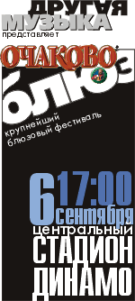

Москва, Воронеж, Владимир.
4-9 сентября 2003г.
Пиво «Очаково» в товариществе с концертным агентством «Другая музыка» и при участии интернет-сайта «BLUES.RU» и радио-программы «Весь Этот Блюз» представляют I Московский международный блюзовый фестиваль «Очаково-Блюз».
6 сентября 2003г в рамках празднования Дня города Москвы состоится главное событие фестиваля: это многочасовой блюзовый марафон на Центральном стадионе «Динамо». Грандиозная программа представит лучшие имена отечественного блюза, как молодые, так и признанные, играющие в широком диапазоне блюзовых стилей, от традиционных до современных, от свинговых до блюз-рока. Звезды московского блюза музыканты из 6 других российских городов представят свое видение блюза.
Свое искусство продемонстрируют и зарубежные участники фестиваля из Швеции, Германии и США.
Гордостью программы «Очаково-блюз» является участие гитариста и певца Джимми Ди.Лейна. Он родился в Чикаго, блюзовой столице мира. Его отец: Джимми Роджерс, сочинил песни, ставшие бессмертными блюзовыми хитами. Джимми Роджерс был ближайшим соратником легендарного Мадди Уотерса; и Джимми Ди Лейн с детства впитал особую блюзовую атмосферу домашних джемов великих героев чикагского блюза, приходивших сюда в гости, поджемовать среди своих. Сам Джимми Ди Лейн выступал на одной сцене и записывался в одной студии с Миком Джеггером и Китом Ричардсом («Роллинг Стоунз»), с Робертом Плантом и Димми Пейджем («Лез Зеппелин»), с Эриком Клэптоном и многими другими. Три альбома в его дискографии (включая альбом нынешнего года) выпущены на фирме APO, одной из самых престижных в блюзе.
Виртуозный современный вариант Вэст-коаст блюза подарят москвичам шведы из группы «Нок-аут Грэг энд Блю Уэзер» во главе с изысканным гармонистом Грегером Андерсеном. За десять лет существования группа выпустила 5 альбомов. Постоянно участвует в европейских и американских блюз-фестивалях.
Ироничную стилизацию блюза 40-50-х годов сыграют гости из Германии: «Би-Би энд зе Блюз Шакс». Группа существует почти 15 лет и не раз удостаивалась на родине престижных звания «Блюзбэнд года» и «Блюзовый альбом года».
Специальную программу «Джем всех звезд» проведет известнейшая московская группа «Блюз Казенз». В августе нынешнего года группа провела гастроли в США, и стала первым российским блюз-бэндом, выступившим на американском блюз-фестивале.
В дополнение к грандиозному концерту на стадионе, «Очаково-Блюз» предоставляет и обширную клубную программу. С 4 по 9 сентября в лучших блюзовых и джазовых клубах Москвы: «Форте», «Ритм-н-блюз кафе» и других - пройдут концерты и блюзовые джемы. Три специальные тематические программы: «Акустистика и архаика», «Губная гармоника», «Гитарная импровизация» - представят концерты мастеров этих стилей и направлений.
Большие концерты под эгидой «Очаково-Блюз» состоятся так же в Воронеже и Владимире.
Конгресс США объявил 2003 год - Годом Блюза. Масштабный «Очаково-Блюз» станет на российской земле частью празднования 100-летия блюза.
Программа фестиваля:
Галаконцерт фестиваля: многочасовой блюзовый марафон на Центральном стадионе «Динамо»
Клубная программа фестиваля: шесть дней в десяти музыкальных клубах Москвы: «Форте» (Официальный клуб фестиваля), «Би-2», «Ритм-н-Блюз кафе», «Крымские Каникулы», «Алабама», «JVL», «Art-Garbage», «B.B.King»
Концерты в крупнейших клубах Воронежа и Владимира: «100 ручьев» и «Z-Club».
Зарубежные участники фестиваля:
В фестивале принимают участие все наиболее известные
представители российского блюза:
Московские участники: